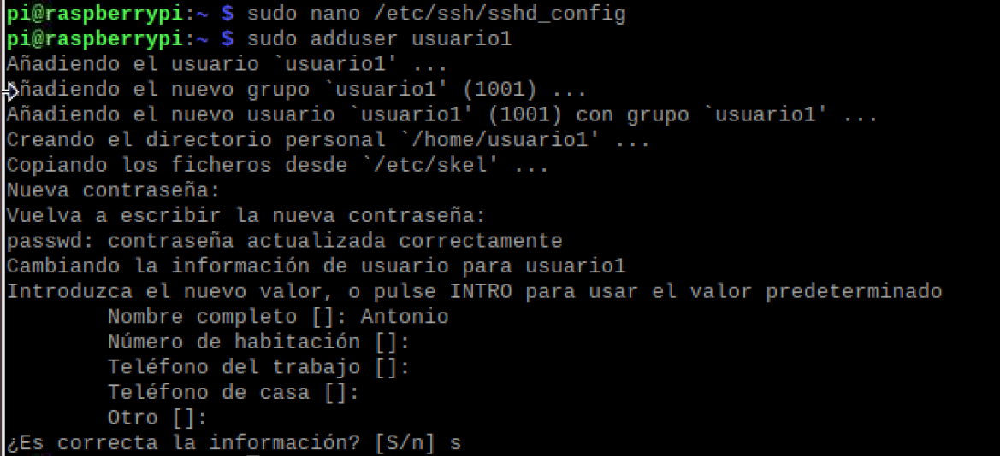
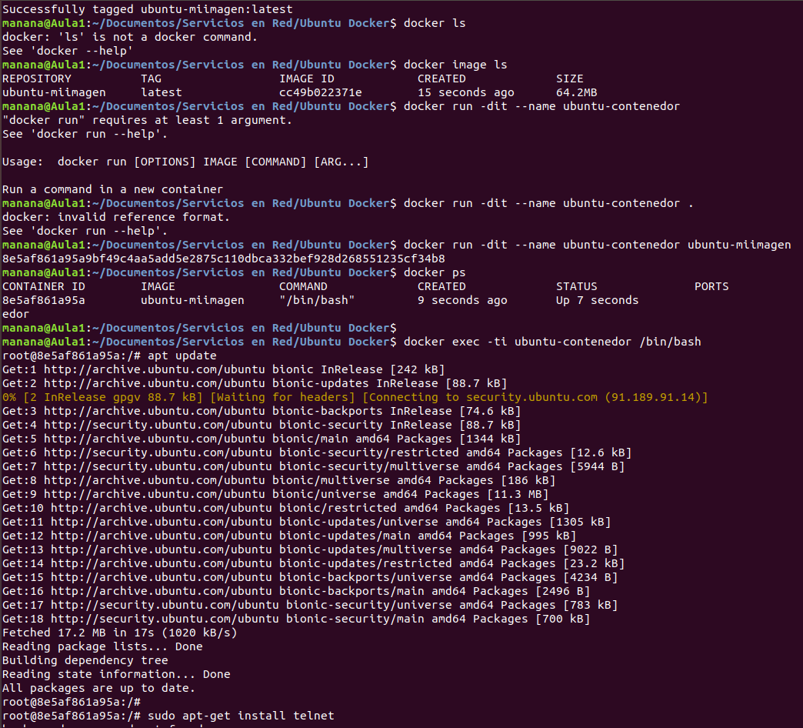

SSH o Secure Shell, es un protocolo de administración remota que le permite a
los usuarios controlar y modificar sus servidores remotos a través de Internet a
través de un mecanismo de autenticación. Proporciona un mecanismo para
autenticar un usuario remoto, transferir entradas desde el cliente al host y
retransmitir la salida de vuelta al cliente. El servicio se creó como un
reemplazo seguro para el Telnet sin cifrar y utiliza técnicas criptográficas
para garantizar que todas las comunicaciones hacia y desde el servidor remoto
sucedan de manera encriptada.
Añadir usuarios con SSH
Antes de añadir algún usuarios debemos instalar SSH, usando el siguiente comando
: sudo apt-get install openssh-server

Ahora que tenemos SSH bien seguro es hora de que veais para qué sirve.
Parto de que tenéis dos equipos, el que tenéis delante y al que queréis
conectar. Obviamente debéis tener una cuenta en el segundo para poder entrar. La
forma de conectar por defecto es la siguiente:
$ ssh tu_cuenta@ip_del_ordenador_remoto
Esto sería si no hubiéramos cambiado el puerto, ya que intentaría conectar
por el puerto 22 que es el puerto por defecto del cliente. Podéis cambiarlo si
queréis para que conecte por defecto por el puerto que le digáis en lugar del 22
editando el fichero /etc/ssh/ssh_config. Descomentáis (si está comentada) la
opción “Port” y en lugar de “22” ponéis el que queráis. La otra opción, que es
lo más normal, es simplemente indicarle en la línea de conexión qué puerto ha de
usar:
$ ssh -p puerto tu_cuenta@ip_del_ordenador_remoto
Para que lo veais más claro os voy a poner un ejemplo. Mi portátil está en
la ip 192.168.1.5 y el puerto SSH que tengo para el mismo es el 4884. La cuenta
que voy a usar para conectarme es “juanjo”, así que para conectar desde mi PC de
sobremesa al portatil sería:
$ ssh -p 4884 juanjo@192.168.1.5
Tras esto me pedirá la contraseña:
juanjo@192.168.1.5's password:
La introducimos y tras un texto de “bienvenida” veremos que nuestro prompt
ha cambiado a “nombre_cuenta@nombre_manquina”. Mi portatil se llama montoro, así
pues mi prompt es:
juanjo@montoro:~$
A partir de este instante tu consola está controlando el equipo remoto.
Estarás en el home de tu cuenta en la máquina remota.
Comando nmap localhost
El comando Nmap también conocido como Network Mapper es una herramienta de
código abierto muy versátil para los administradores de sistemas Linux / red.
Nmap se utiliza para explorar redes, realizar análisis de seguridad, auditoría
de red y búsquedas de puertos abiertos en la máquina remota.
